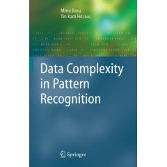
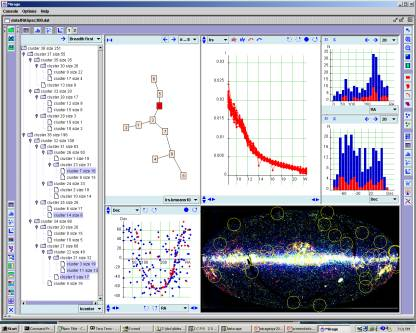
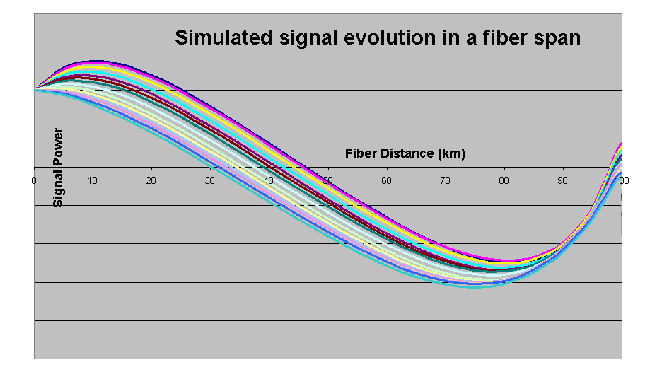
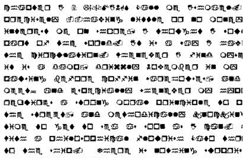

The fundamental theme of my research is on observation and algorithmic modeling of complex systems and phenomena in the physical world. This theme develops into algorithms, tools, and applications of pattern recognition, data mining, performance monitoring, and computational modeling and simulation.
I seek to discover and represent knowledge embedded in large, high-dimensional data sets by algorithmic processes. More specifically, I pursue methods for natural partitioning of data, systematic search for correlations, characterizing complexity of dependences, generation and evaluation of feature transformations, dynamic adjustment of established models, and above all, classification. On classification, I explored methods for multiple classifier systems, random decision forests, and more recently, data complexity analysis.
To facilitate these, I also explore methods and tools for interactive data visualization and analysis. For my special interests in data coming from sensors and imaging devices, my methods emphasize joint explorations with the raw data and all levels of abstraction resulting from pre-processing, feature extraction, and decision making algorithms.
Besides pattern recognition, I pursue an interest in computational modeling and simulation of complex systems. I have built models of reading processes, sensor networks, and optical transport systems.
Data Complexity |
Mirage |
FROG |
A Challenge |
|  |  |  |  |
|
My recent works on exploring the intrinsic limits of pattern learning are collected in our book on Data Complexity in Pattern Recognition. |
One of my recent projects is Mirage, an experimental tool for interactive pattern recognition. It is available for download. |
Another major project I worked on is FROG, a physical layer simulator for optical network systems. There we calculate how light changes within trans-continental fiber links connected with many amplification devices. |
Is human necessarily superior to machines in perceptual tasks? If you believe so, try taking this challenge. Can you read the text printed in this image? If so, tell me what it is and how long it takes you to find out. If not, my program can do better than you, and it did the job in just a few minutes. Find out how. |